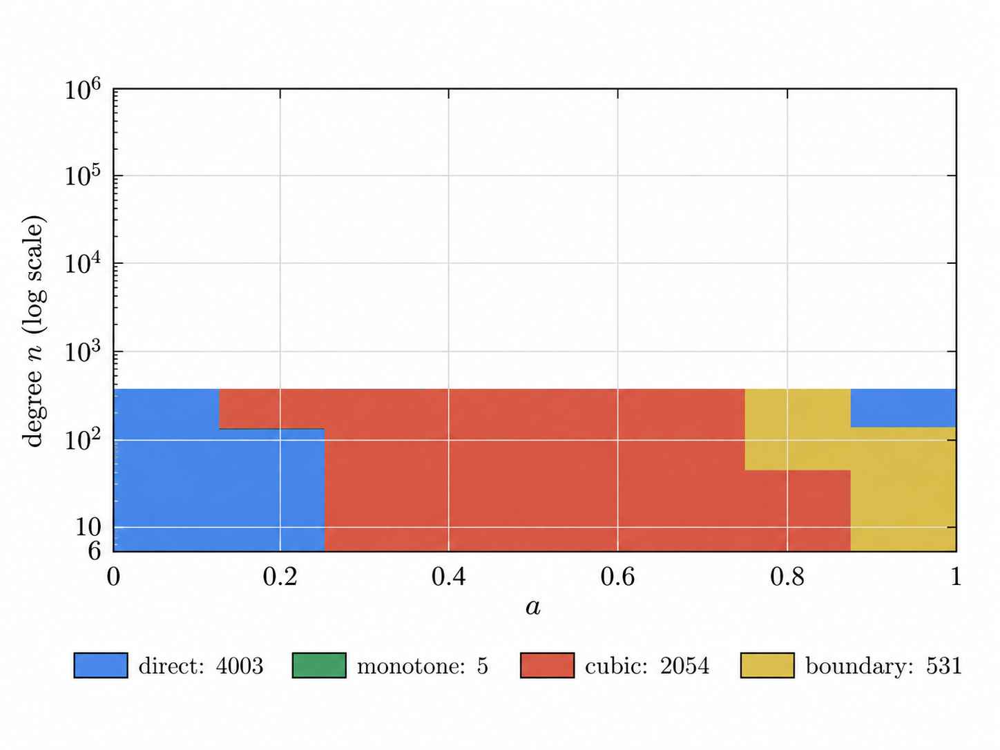

Provides a Lean 4 formalization of the main results, the quadratic Tang–Zhang inequality strengthening Sendov's conjecture.
Abstract
Very recently, Lech Mazur proved the celebrated Sendov conjecture, and Terence Tao subsequently distilled the main ideas of the proof in a blog post. In this paper, we establish a quantitative strengthening of Sendov's conjecture, namely the quadratic Tang–Zhang inequality. Let $p$ be a polynomial of degree $n\ge2$ whose zeros lie in the closed unit disk, and let $ζ_1,\ldots,ζ_{n-1}$ denote its critical points, counted with multiplicity. We prove that, for every zero $a$ of $p$, $$ \sum_{j=1}^{n-1}\frac{1}{|a-ζ_j|^2}\ge n-1. $$ Moreover, equality holds if and only if $p(z)=c(z^n-ω)$ for some $c\in\mathbb C\setminus\{0\}$ and $|ω|=1$. We also provide a Lean 4 formalization of the main results.
Problem
Sendov's conjecture states that for a degree-n polynomial with zeros in the closed unit disk, every zero has a critical point within distance 1. The paper seeks a quantitative strengthening.
Approach
The authors establish the quadratic Tang–Zhang inequality: for every zero a, the sum of 1/|a−ζ_j|^2 over critical points is at least n−1. The proof reduces the problem, uses communication identities, polar and centered origin channels, and analytic elimination for large degrees. For degrees 6 ≤ n ≤ 10^6 the continuous parameter problem is reduced to finitely many exact rational comparisons over certified rectangles. A Lean 4 formalization of the main results is provided.
Results
The quadratic inequality is proved, with equality holding if and only if p(z)=c(z^n−ω) for |ω|=1. Small degrees, endpoints, and the equality case are handled separately.

Figure 3. Coverage of the finite certificate in the (a,n) parameter plane. The colors indicate the exclusion condition used for the certified rectangles: blue for the direct test, green for the monotonicity test, red for the cubic test, and gold for the boundary test. The vertical degree axis is displayed on a logarithmic scale, from n=6 to n=10^{6} . Thus the figure illustrates the coverage of th